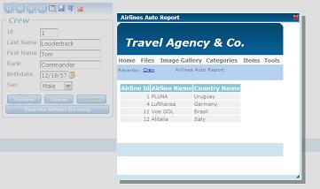

This command has a similar behavior than the Window Data Type. It allows you to make a call to a modal pop-up window, which means that it blocks the parent application until the user closes it in any way. It can only be used in transaction and Web Panel events. Syntax
 The fourth button in the lower window, which is a transaction, displays all the airlines to which the on-duty crew member has been associated with. This button is associated with a user event and is programmed as follows (method style): Event 'ViewList' RptAirlinesAuto.Popup(&MessageTxt) EndEvent This is the equivalent of the following code (command style):
Event 'ViewList'
PopUp(RptAirlinesAuto,&MessageTxt)
EndEvent
Pop-up windows can be manually resized from their lower right corner. Note: When opening many PopUps in the same screen, only the last one called is showed. This means only one PopUp is show at once. Note #2: When you call a Popup with the GET method, you don´t have control about the maximum URL length. Each browser solves it differently:
|
| Backlinks |
| Load balancing considerations |